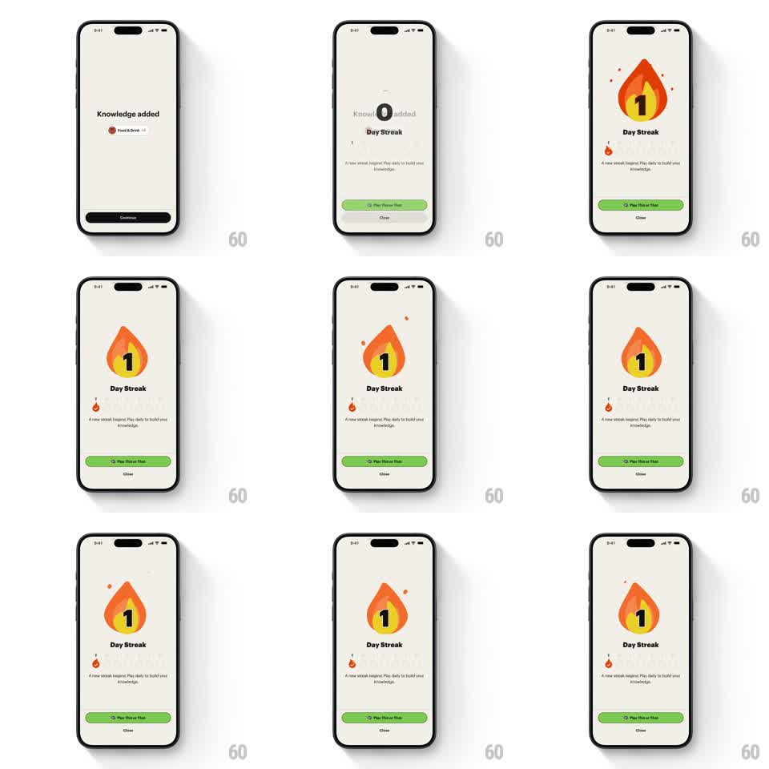

Media
Frame-by-frame

Rebuild this animation 1:1: Spark's streak celebration - a big orange flame badge with the streak count springs up from nothing, sheds tiny flame particles, and settles into a gentle idle bob above the "Day Streak" title, copy, and green CTA.

Rebuild this animation 1:1: Spark's streak celebration - a big orange flame badge with the streak count springs up from nothing, sheds tiny flame particles, and settles into a gentle idle bob above the "Day Streak" title, copy, and green CTA. ## Integration Integration: stack-agnostic spec - springs given as stiffness/damping, timed motions as duration + curve; map every value to your framework and animation library of choice. ## Scene Celebration screen on cream, entered from a "Knowledge added" toast state. Center: a large rounded flame icon carrying the white streak number. Below: "Day Streak" title, a line of copy, a small flame mini-badge, a filled green "Play Rise or Rest" button, and a Close text button. ## Motion spec Pattern: bouncy badge spring entrance with particle accents and an idle loop. - The flame scales up from 0 (spring ~240/12, ~700ms) with 2-3 visible overshoot bounces before resting. - At the first overshoot peak, 3-4 tiny flame/spark particles pop from the badge's edges (translate 20-40px outward, fade, 400ms, staggered 60ms). - The number inside pops a beat after the flame (scale 0.5 -> 1, spring ~320/18, 250ms). - Title, copy, mini-badge, and buttons fade up in sequence (200ms each, 80ms stagger) after the badge lands. - Idle: the flame bobs gently (+/- 6px, 2.5s, ease-in-out) with a subtle inner-flicker (scaleY +/- 4%). ## Calibration - Big and bouncy is the brief - the badge should feel like it burst onto the screen. - Particles are a single burst, not a loop; the bob is the only continuous motion. ## Reduced motion Badge fades in at final size (250ms); no particles, no bob. ## Don't miss - The flame is chunky and rounded - friendly, not realistic fire. - The streak number is pure white and centered; it never wobbles with the flame.